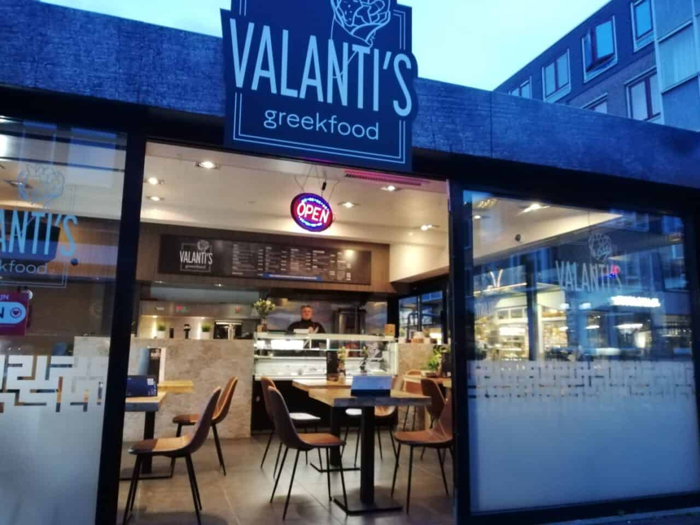

Mondriaanplein · Uden
De smaak van Griekenland, midden in Uden
Pita gyros, souvlaki van de grill, musaka uit de oven. Haal het af, laat het bezorgen of eet het ter plekke.
Ma en wo t/m zo open van 15:00 tot 21:00 · dinsdag gesloten
Laten bezorgen
Wij bezorgen woensdag t/m maandag van 15:30 tot 21:00 uur. Bestellen gaat via onze webshop.
Ter plekke eten
Liever rustig zitten? Schuif aan in onze moderne eetruimte en eet je gerecht warm van de grill.

Eten bestellen in Uden
Zin in Grieks? Bestel het in een paar klikken.
Via onze webshop kies je je gerechten, betaal je en geef je aan of je afhaalt of laat bezorgen. Liever even bellen? Dat kan natuurlijk ook.
Openingstijden
| Maandag | 15:00 – 21:00 |
|---|---|
| Dinsdag | gesloten |
| Woensdag | 15:00 – 21:00 |
| Donderdag | 15:00 – 21:00 |
| Vrijdag | 15:00 – 21:00 |
| Zaterdag | 15:00 – 21:00 |
| Zondag | 15:00 – 21:00 |

Over ons
Echte Griekse smaken, snel en eenvoudig
Bij Valanti's greekfood nodigen we je uit om te genieten van echte Griekse smaken, midden in het hart van Uden. Ons afhaalrestaurant is gespecialiseerd in traditionele Griekse gerechten en staat voor kwaliteit en traditie.
In tegenstelling tot de traditionele Griekse restaurants in Uden richt Valanti's zich op afhaalmaaltijden, in een moderne eetomgeving.
Valanti, de eigenaar, deed uitgebreide ervaring op in Griekse restaurants in Nederland én in zijn geboorteland Griekenland. Nu heeft hij zijn eigen plek, waar je op een snelle en eenvoudige manier van Grieks eten geniet.
Gastvrijheid staat bij Valanti's altijd centraal.
Reviews en feedback
Lekker gegeten? Laat het ons weten.
De mening van onze klanten is voor ons belangrijk. Wij zijn een startende horecazaak, dus we hechten hier veel waarde aan. Je feedback kun je altijd doorgeven via ons feedbackformulier; we proberen zo snel mogelijk te reageren.
Vacatures
Werken bij Valanti's?
Lijkt het je leuk om ons team te versterken? Bekijk onze vacatures en solliciteer.
Contact & route
Valanti's greekfood
Mondriaanplein 1b5401 HX Uden
- Telefoon0413 322 983
- E-mailinfo@valantisgreekfood.nl
- Bestellenvalantis.sitedish.shop